1.3 Replacing a Propagator
There are situations when a propagator should be replaced by another one. The replacing propagator must have the same declarative semantics, but should provide a more efficient implementation for a particular situation.
Consider the following situation: First a propagator  was imposed. At a later point in time the constraint 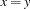 is told to the constraint store. The equality constraint allows to replace by 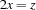. The rules below show how can be replaced by another (equality) constraint, if two variables are set equal.
was imposed. At a later point in time the constraint 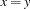 is told to the constraint store. The equality constraint allows to replace by 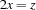. The rules below show how can be replaced by another (equality) constraint, if two variables are set equal.
Rule 1: 
Rule 2: 
Rule 3: 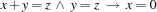
Such simplifications can be implemented by replacing a propagator by another one. The CPI provides for that purpose in OZ_Propagator a group of member functions replaceBy. This section demonstrates how to realise the above simplifications using the example of the previous section.
1.3.1 A Twice Propagator
The implementation of the simplification rule 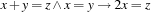 requires a propagator for the constraint . The following code defines the class TwiceProp.
class TwiceProp : public OZ_Propagator {
private:
static OZ_PropagatorProfile profile;
OZ_Term _x, _z;
public:
TwiceProp(OZ_Term a, OZ_Term b)
: _x(a), _z(b) {}
virtual OZ_Return propagate(void);
virtual size_t sizeOf(void) {
return sizeof(TwiceProp);
}
virtual void gCollect(void) {
OZ_gCollectTerm(_x);
OZ_gCollectTerm(_z);
}
virtual void sClone(void) {
OZ_sCloneTerm(_x);
OZ_sCloneTerm(_z);
}
virtual OZ_Term getParameters(void) const {
return OZ_cons(_x,
OZ_cons(_z,
OZ_nil()));
}
virtual OZ_PropagatorProfile *getProfile(void) const {
return &profile;
}
};
OZ_PropagatorProfile TwiceProp::profile;
The member function propagate() mainly consists of a for-loop collecting in auxiliary variables the values 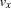 and  satisfying the relation 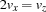.
satisfying the relation 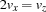.
OZ_Return TwiceProp::propagate(void)
{
OZ_FDIntVar x(_x), z(_z);
OZ_FiniteDomain x_aux(fd_empty), z_aux(fd_empty);
for (int i = x->getMinElem(); i != -1;
i = x->getNextLargerElem(i)) {
int i2 = 2 * i;
if (z->isIn(i2)) {
x_aux += i; z_aux += i2;
}
}
FailOnEmpty(*x &= x_aux);
FailOnEmpty(*z &= z_aux);
return (x.leave() | z.leave())
? OZ_SLEEP : OZ_ENTAILED;
failure:
x.fail(); z.fail();
return OZ_FAILED;
}
1.3.2 Equality Detection and Replacement
Imposing equality on variables is done by unification. A propagator is always resumed if at least one variable of its parameters is unified with another variable. The class OZ_Propagator provides for a member function mayBeEqualVars(), which returns 1 in case the propagator is resumed because at least one of its parameters was involved in a unification. Otherwise it returns 0.
To detect if the addition propagator is resumed because of a unification the following macro is defined. First, it checks if the propagator's parameters were involved in some unification. If that is the case, all possible combinations of equated variables are tested. The CPI function OZ_isEqualVars() is provided for that purpose. It takes two heap references and returns 1 if they refer to the same variable. In case equal variables are detected the execution branches to a return statement, which returns the value produced by executing the function passed as argument of the macro.
#define ReplaceOnUnify(EQ01, EQ02, EQ12) \
if (mayBeEqualVars()) { \
if (OZ_isEqualVars(_x, _y)) { \
return (EQ01); \
} \
if (OZ_isEqualVars(_x, _z)) { \
return (EQ02); \
} \
if (OZ_isEqualVars(_y, _z)) { \
return (EQ12); \
} \
}
The macro is inserted as first statement in the code of the addition propagator. The member functions replaceBy() and replaceByInt() provided by OZ_Propagator replace the addition propagator according to their arguments by another propagator or a basic constraint.
OZ_Return AddProp::propagate(void)
{
ReplaceOnUnify(replaceBy(new TwiceProp(_x, _z)),
replaceByInt(_y, 0),
replaceByInt(_x, 0));
The first argument of the macro causes the addition propagator to be replaced by the twice propagator, which implements reduction rule 1 *. The member function replaceBy() expects a pointer to a propagator which is generated by applying the new operator to the constructor of the class TwiceProp. The second and third macro argument realize the simplification rules 2 * and 3 * by imposing the constraint  resp.
resp.  .
.
1.3.3 Benefits of Replacing Propagators
In most of the cases when propagators are replaced the execution becomes faster without obtaining a stronger propagation simply by the fact that redundant computation is avoided. The example of this section provides for even better propagation by imposing a stronger constraint. This can be observed when running the following Oz code. Of course, the updated module has to be loaded before.
declare X Y Z in
{Browse [X Y Z]} % [X Y Z]
X :: [1 3 5 7 9] % [X{1 3 5 7 9}
Y :: [1 3 5 7 9] % Y{1 3 5 7 9}
Z :: 0#10 % Z{0#10}]
{FD_PROP.add X Y Z} % [X{1 3 5 7 9} Y{1 3 5 7 9}
% Z{2 4 6 8 10}]
X = Y % [Y{1 3 5} Y{1 3 5} Z{2 6 10}]
Note that the constraint causes to be replaced by , so that the domain of  and
and  is further constrained to 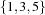, which is not the case for the propagator implemented in Section 1.2.
is further constrained to 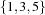, which is not the case for the propagator implemented in Section 1.2.